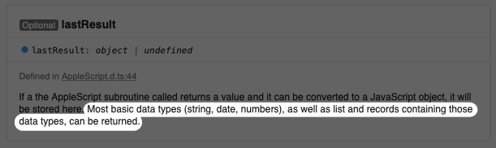
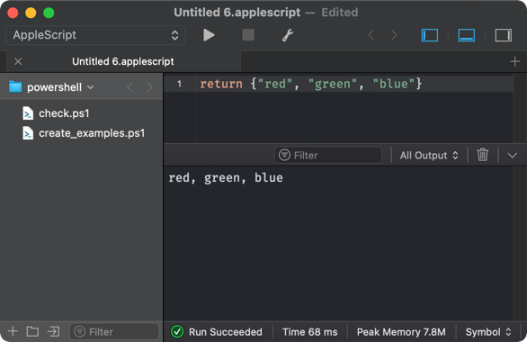

I’ve been tinkering with some AppleScript and Drafts for several hours today, and I keep getting to the point where Drafts hangs and I am not sure what is wrong. I’m hoping someone can help me see the wood for the trees.
I’ve tried the AppleScript both as part of an AppleScript action step and as an AppleScript scripting object, with both producing identical results for me. I’ve simplified my example case as much as possible, but it essentially revolves around AppleScript lists.
The documentation explicitly notes that you can return lists of the basic data types from AppleScript.

If I start with a single string, and display the return from the AppleScript step using a bit of JavaScript, then I get an alert dialog displaying the string of text set to be returned by the AppleScript.
on execute()
return {"red", "green", "blue"}
end execute
The statement is valid AppleScript when tested outside of Drafts:

Does anyone have any ideas of what I have missed, or an example of an AppleScript in Drafts successfully returning a list (any type of call from an action)?
This is not a solution, but I wondered if your example would run if it were translated entirely into a single JavaScript script action.
This works:
let script = AppleScript.create(`on test()
return "red, green, blue"
end test`)
let success = script.execute('test');
if (success) {
alert(script.lastResult);
}
else {
alert(script.lastError);
}
And this hangs, forcing me to quit Drafts:
let script = AppleScript.create(`on test()
return {"red", "green", "blue"}
end test`)
let success = script.execute('test');
if (success) {
alert(script.lastResult);
}
else {
alert(script.lastError);
}
So there is at least a consistency between the behavior of an AppleScript action and an AppleScript built and executed within JavaScript. And I can’t think of a simpler example, so we’ll have to wait to hear what Greg says about it.
Minor update: Rewriting the test function to return a number works; rewriting it to return a list of numbers fails.
This is a bug. Just ran it in the debugger and it’s specific to the conversion process of Apple Event list values in the result. It will be fixed in the next beta.
Finally got a few minutes to check the update in beta 27.5.37 this evening and the AppleScript list return fix is now working for my test case. Thanks Greg.